Etapa 3 · A Superfície
Uma experiência até o último mergulho.
Hero e serviços preservados; ambientes, materiais, percurso comercial, simulação e encerramento integrados. Projeto fictício. Todas as cenas são geradas por IA.
Percurso completo
Preferência nativa de movimento reduzido nas três capturas longas. Isso registra os enquadramentos da abertura e dos serviços sem um canvas fixo ocupar posições incorretas na captura integral. As imagens de seção e os vídeos mostram movimento ativo.

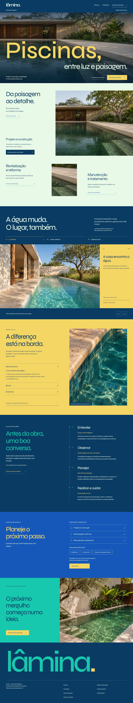

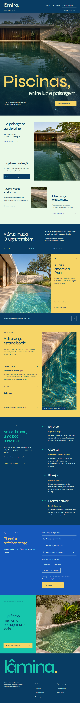

Ambientes
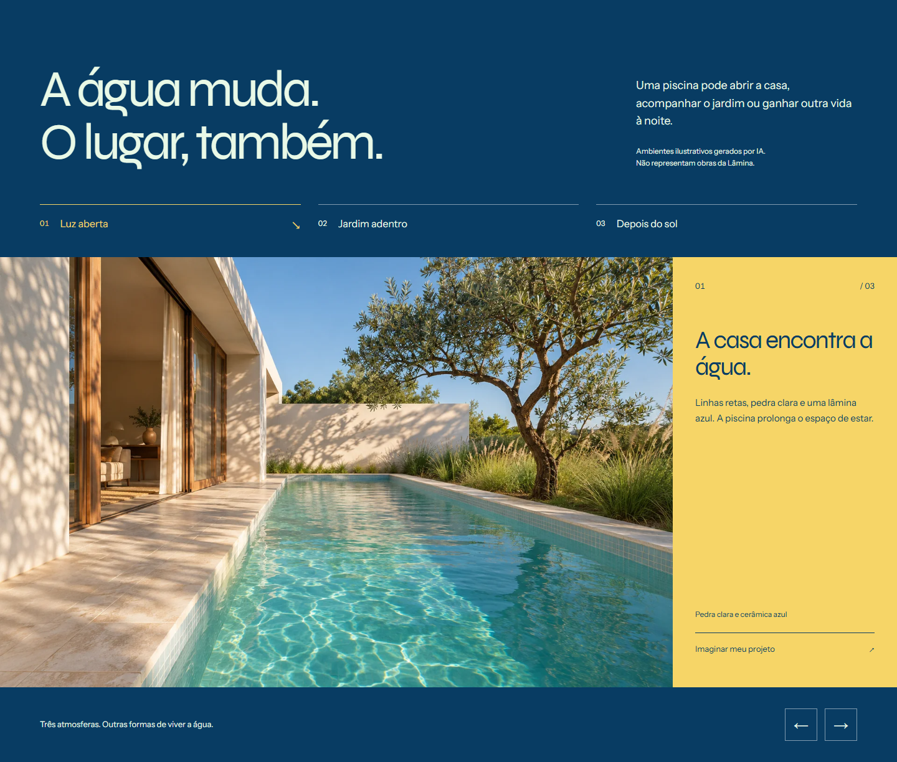
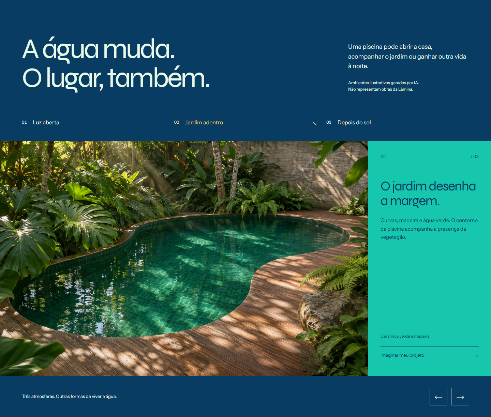
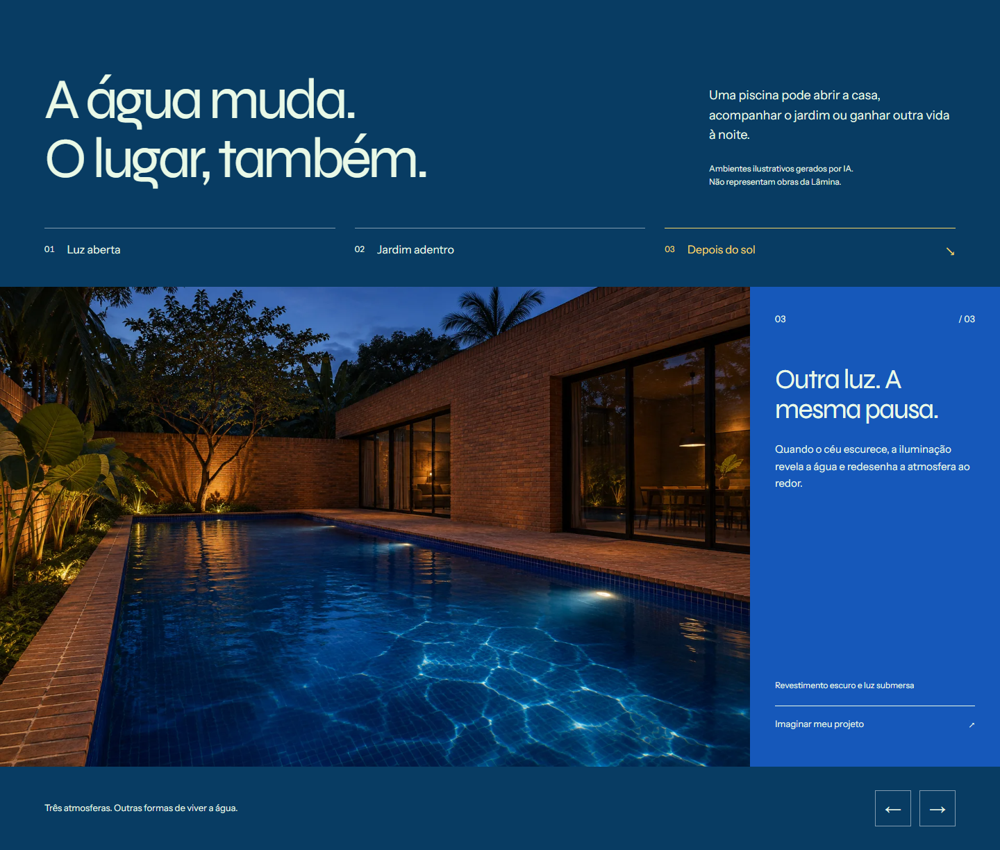

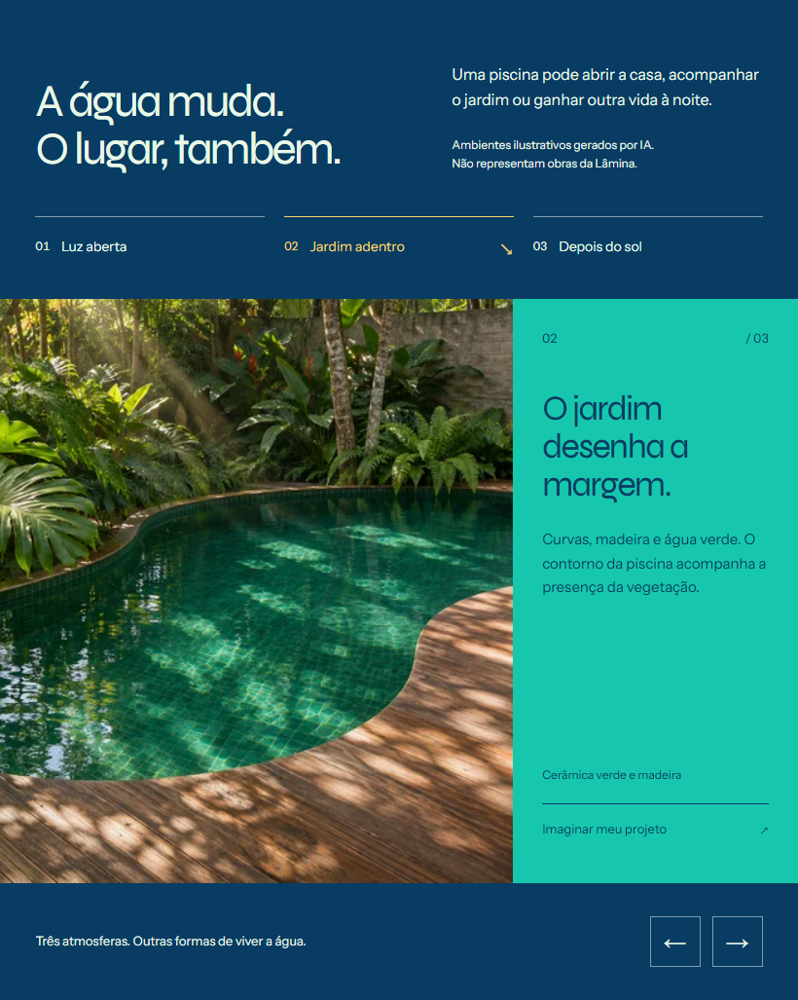

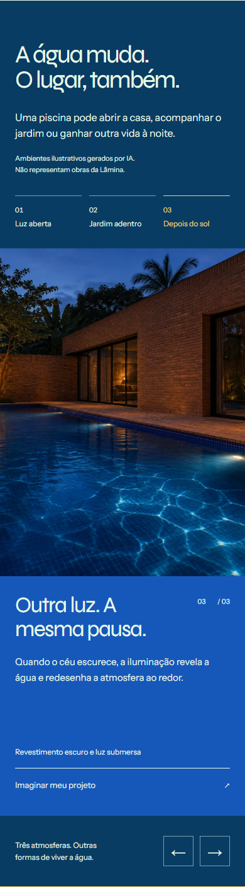
Matéria, processo e simulação

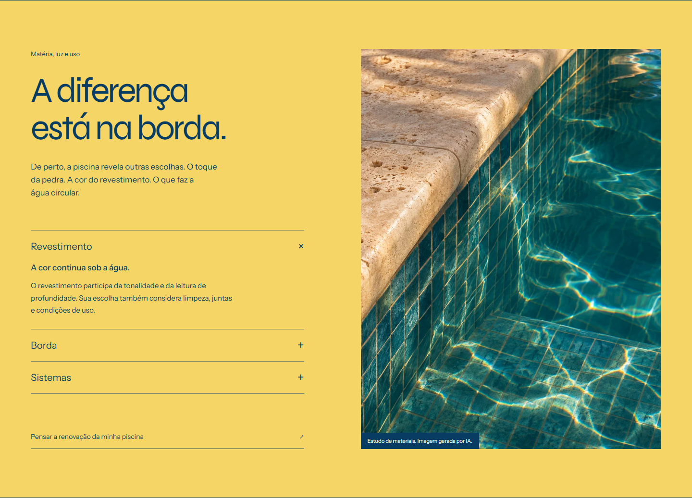

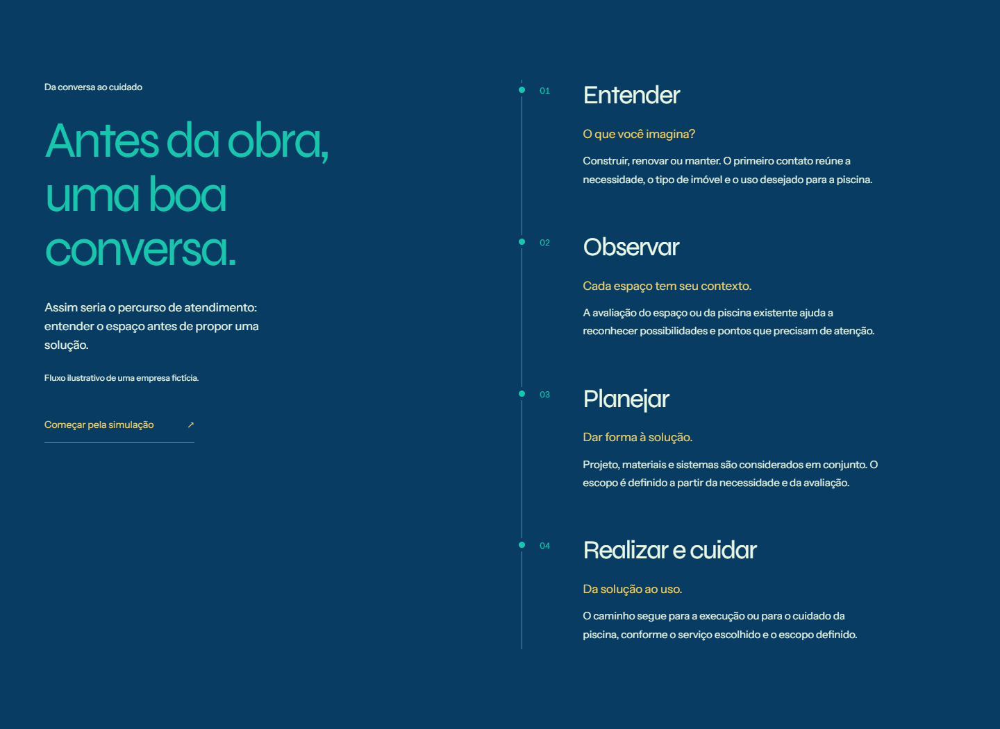

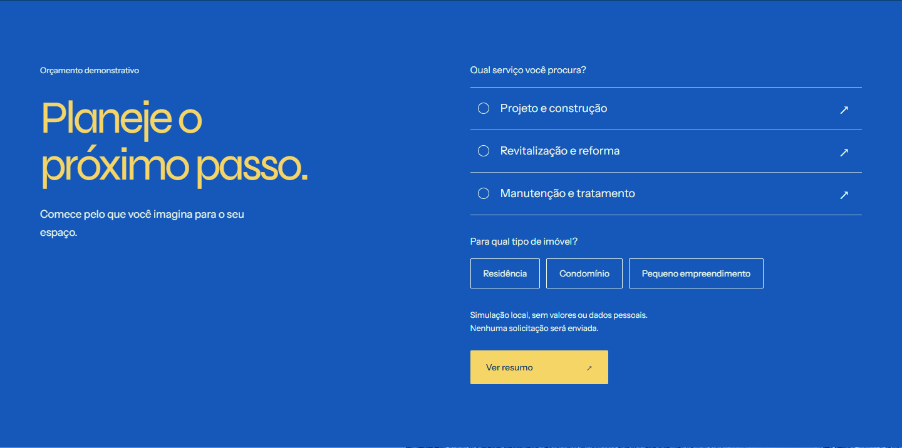

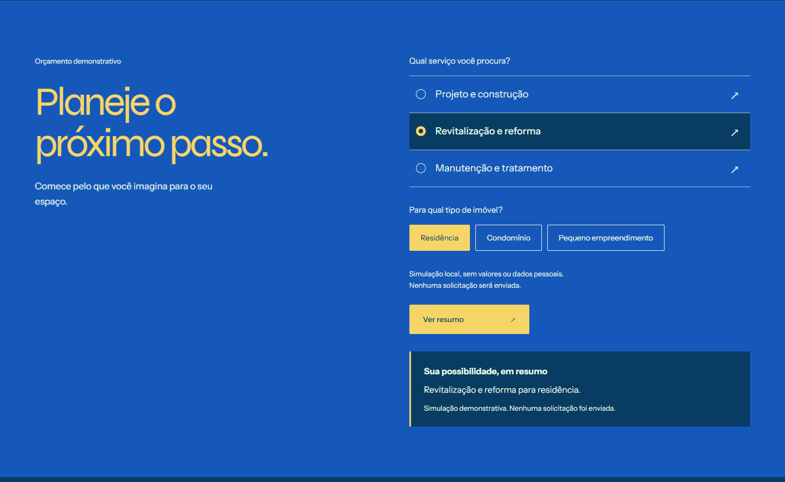

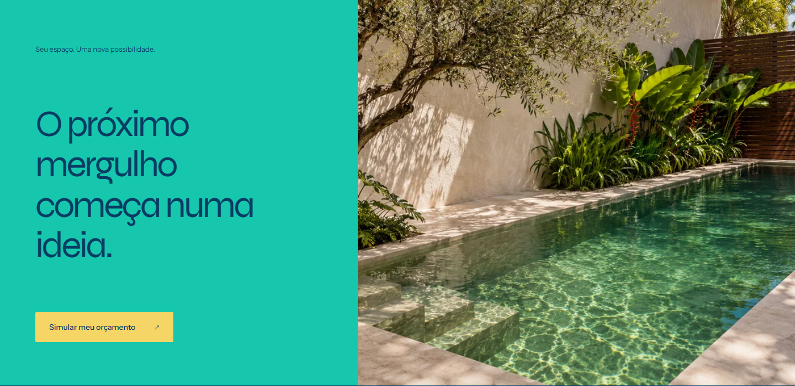

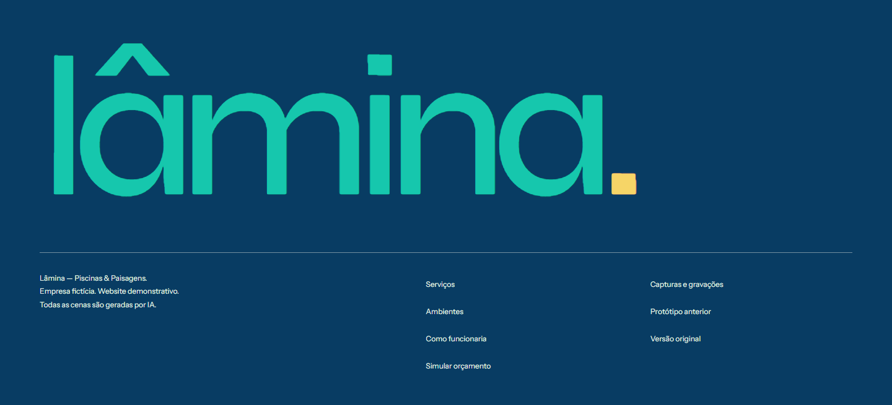
Gravações brutas
Registros de navegação automatizada real, sem montagem. Incluem a preparação e o carregamento inicial do navegador. As setas e gestos mudam os ambientes; os materiais abrem; a simulação gera o resumo local; a rolagem alcança o encerramento.
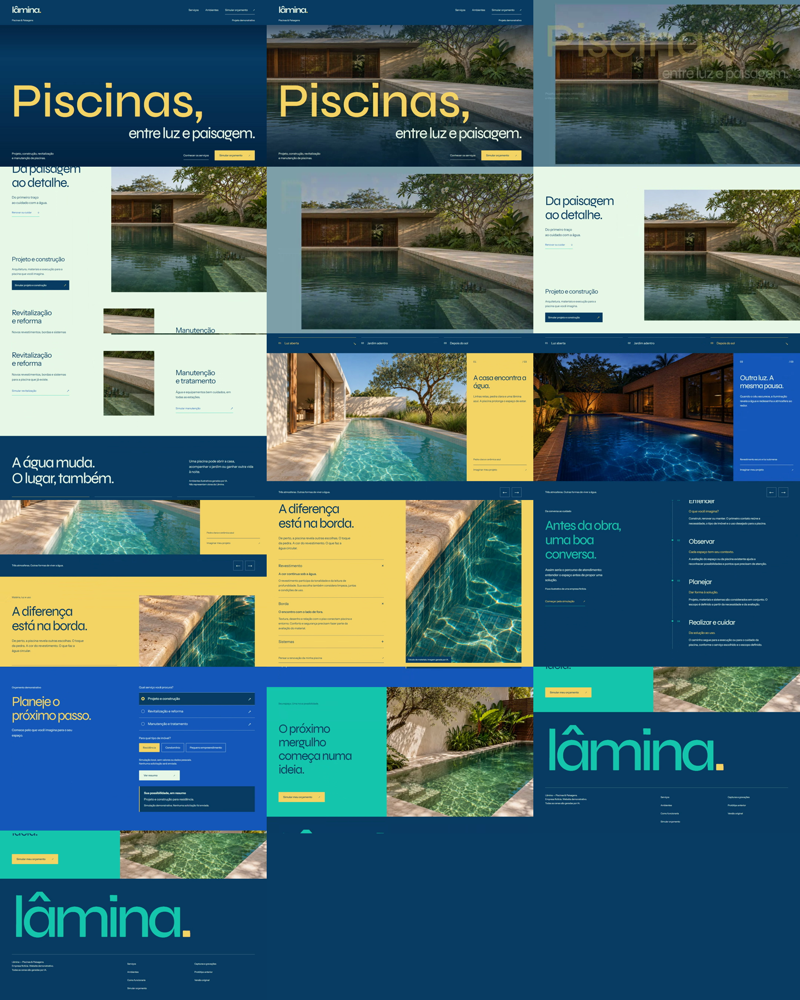
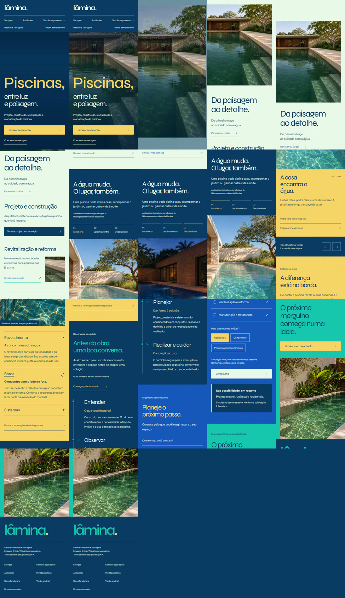
Sem commits, push ou deploy. A Etapa 4 aguarda avaliação do proprietário.